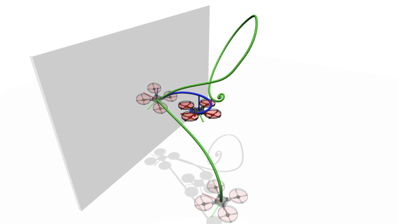

Dual quaternion collision recovery
A closed-form hybrid reset map on the dual quaternion manifold that keeps normal–tangential impulse coupling in a single algebraic operation. Proven hybrid Lyapunov stability, 25% fewer FLOPs than the matrix formulation.